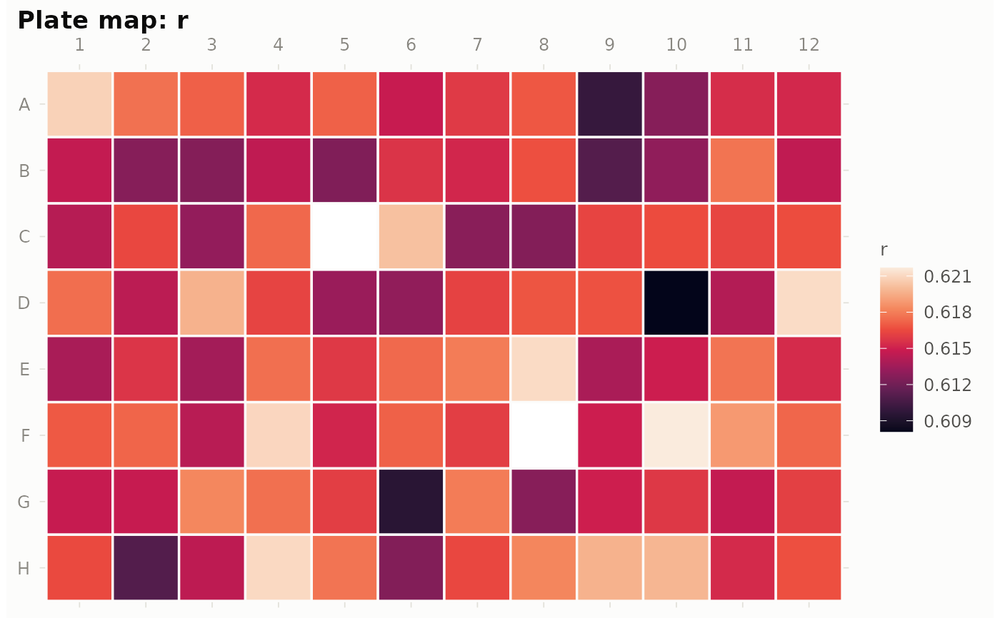

Estimates growth parameters for every well and stores them in plate$fit.
Two methods are available:
Usage
gr_fit(
plate,
method = c("logistic", "gompertz", "compare", "easylinear"),
n_baseline = 3,
min_od = 0.05,
window = 5,
min_r2 = 0.97,
boot = 0,
conf_level = 0.95
)Arguments
- plate
A
gr_plateobject, ideally aftergr_qc()(and optionallygr_spatial()).- method
"logistic","gompertz","compare", or"easylinear"(see Details).- n_baseline
Number of initial readings averaged as the baseline that is subtracted before fitting. Default
3.- min_od
For
method = "easylinear": baseline-subtracted values must exceed this before a point enters the log-scale regressions. Default0.05: generous relative to typical OD noise, because log-scale noise at near-blank readings otherwise inflates the steepest-window estimate. Lower it for low-density experiments with a quiet reader.- window
For
method = "easylinear": number of consecutive points per rolling regression. Default5(Hall et al.'s choice).- min_r2
For
method = "easylinear": minimum R-squared for a window to be considered exponential growth. Default0.97.- boot
Number of bootstrap resamples for confidence intervals on the parameters. Default
0(off). Withboot > 0(200 is a reasonable choice), residuals are resampled and the model refitted per resample;$fitgains percentile intervalsr_lo/r_hi(both methods) andK_lo/K_hi(logistic only — easylinear's K is an empirical maximum, not a fitted parameter). Wells where fewer than half the resamples converge getNAintervals.- conf_level
Confidence level for the bootstrap intervals. Default
0.95.
Value
The gr_plate with $fit set: a tibble with one row per well and
columns well, row, col, r, K, N0, lag, t_rmax,
doubling_time, sigma (residual SD on the value scale), fit_ok, and
note. plate$data gains a fitted column.
Details
"logistic"(default) — a parametric fit of the logistic growth model viastats::nls()with the self-startingstats::SSlogis()model, on baseline-subtracted values. Returns the carrying capacityK, the intrinsic growth rater, the initial densityN0, the time of maximum growtht_rmax(the inflection point), the lag time (tangent at the inflection extrapolated to the baseline), and the doubling timeln(2)/r."gompertz"— a parametric fit of the Gompertz model viastats::SSgompertz(). Growth curves with a long deceleration phase are often Gompertz-shaped rather than logistic. Hereris the Gompertz rate constant k — a different scale from the logisticr, so compare strains within one method, and compare models with"compare"."compare"— fits both logistic and Gompertz to every well and keeps the model with the lower AIC.$fitgainsmodel(the winner),aic_logistic,aic_gompertz, anddelta_aic(the winner's margin; small values mean the data cannot really tell the models apart)."easylinear"— a nonparametric estimate after Hall et al. (2014): rolling linear regressions oflog(value - baseline)overwindowconsecutive points, keeping only windows whose R-squared exceedsmin_r2;ris the steepest remaining slope — the maximum per-capita growth rate, often written \(\mu_{max}\). The R-squared filter is what makes this robust: windows dominated by low-OD noise are simply rejected.Kis the (spike-resistant, running-median smoothed) maximum of the curve, and the lag time is where the fitted exponential crosses the initial log-density. Use this when curves are not logistic (diauxie, weird shapes).
Wells where the fit fails — dead wells have nothing to fit — get
fit_ok = FALSE and an explanatory note, never an error. Flagged wells
are fitted like any others (flags never delete); check plate$qc before
trusting their parameters. If the plate was corrected with gr_spatial(),
the corrected values are fitted.
Fitted curves are stored in a fitted column of plate$data (NA where
the model makes no prediction), so gr_plot_fit() can overlay them on the
data. Refitting (e.g. with the other method) simply replaces the previous
results.
References
Hall BG, Acar H, Nandipati A, Barlow M (2014). Growth rates made easy. Molecular Biology and Evolution 31(1), 232-238.
See also
gr_plot_fit() to inspect fits, gr_plot_plate() to map any fit
parameter, as_growthcurver()/as_gcplyr() if you prefer those fitting
engines.
Examples
plate <- gr_read(system.file("extdata", "growth_long.csv", package = "gRate"))
plate <- gr_qc(plate)
plate <- gr_fit(plate)
plate
#> <gr_plate> 96 wells x 49 timepoints
#> time: 0 to 24 (interval 0.5)
#> instrument: generic, plate: growth_long
#> QC: 5 flagged wells (no_growth: 2, spike: 3)
#> fit: logistic (94/96 wells), median r = 0.616
head(plate$fit)
#> # A tibble: 6 × 17
#> well row col model r K N0 lag t_rmax doubling_time sigma
#> <chr> <chr> <int> <chr> <dbl> <dbl> <dbl> <dbl> <dbl> <dbl> <dbl>
#> 1 A1 A 1 logi… 0.621 1.05 0.00705 4.82 8.04 1.12 0.00512
#> 2 A2 A 2 logi… 0.618 1.02 0.00702 4.81 8.05 1.12 0.00479
#> 3 A3 A 3 logi… 0.617 1.03 0.00712 4.81 8.05 1.12 0.00478
#> 4 A4 A 4 logi… 0.615 1.02 0.00721 4.79 8.04 1.13 0.00411
#> 5 A5 A 5 logi… 0.617 1.05 0.00725 4.82 8.06 1.12 0.00487
#> 6 A6 A 6 logi… 0.615 0.977 0.00689 4.79 8.05 1.13 0.00454
#> # ℹ 6 more variables: r_lo <dbl>, r_hi <dbl>, K_lo <dbl>, K_hi <dbl>,
#> # fit_ok <lgl>, note <chr>
gr_plot_plate(plate, "r")
